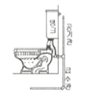
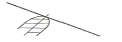
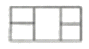
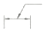
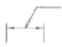
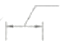
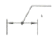
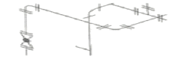

배관기능사 (2015-04-04 기출문제)
1과목: 배관시공 및 안전관리
1. 공기 수송기를 이용하여 고체의 분말 또는 가는 입자를 수송하는 배관설비의 일반적인 명칭은?
- 집진배관설비
- 압축공기설비
- 기송배관설비
- 진공압축설비
(정답률: 67%)

2. 수분이 없는 건포화 증기에 열을 가하면 압력은 변동없이 온도만 상승시킨 증기를 얻을 수 있는데 이 증기를 무엇이라고 하는가?
- 습증기
- 과열증기
- 건증기
- 포화수증기
(정답률: 63%)
3. 다음 중 일반적인 현장지시 압력계설치 높이(바닥면에서 압력계지시 눈금까지 높이)로 가장 적합한 것은?
- 0.1m
- 0.3m
- 1.5m
- 2.2m
(정답률: 83%)
4. 저장탱크 및 용기는 온도상승에 의한 액팽창 때문에 파괴되는 것을 방지하기 위하여 상온에서 저장탱크 내의 액화가스 용량은 내부체적의 최소 얼마 이상의 안전공간이 필요한가?
- 10%
- 20%
- 30%
- 40%
(정답률: 49%)
5. 도시가스와 비교한 LP가스의 특징으로 옳지 않은 것은?
- 가스압력을 자유로이 설정할 수 있다
- 간단한 배관 시공으로 사용할 수 있다.
- 열용량이 크기 때문에 관경이 작은 관으로 공급할 수 있다
- 특유의 증기압을 이용하여 쓸 수 있으므로 가압장치가 필요하다.
(정답률: 61%)
6. 기계적 세정방법에 관한 설명으로 옳지 않은 것은?
- 기계적 세정법에는 침적법, 서징법, 순환법 등이 있다
- 플랜트 본체나 부분을 분해하거나 해체하여야 하는 어려움이 있다
- 복잡한 내부구조의 경우 화학적 세정방법에 비하여 효율적인 세정효과를 얻기 힘들다
- 스케일 해머, 스크레이퍼, 튜브 크리이너 등을 이용하여 관이 손상되지 않게 스케일을 제거한다.
(정답률: 59%)
7. 관 제작시 중심각이 90°인 6핀 마이터의 절단각은 몇 도인가?
- 9°
- 13°
- 15°
- 20°
(정답률: 52%)
8. 그림과 같이 호텔이나 주택 등에서 사용하는 세정장치의 방식은?

- 로 탱크식
- 하이 탱크식
- 세정 밸브식
- 기압 탱크식
(정답률: 67%)
9. 열교환기의 설치방법에 관한 설명으로 옳지 않은 것은?
- 강제가대의 경우 동체 하부에 부착된 밸부에서 바닥까지 300mm 이상 확보한다
- 콘크리트 가대 위에 놓은 경우는 지면에서 가대까지 600~750mm를 확보한다
- 강제가대의 경우 동체하부에 밸브가 없을 때에는 배관에서 바닥까지 최소 150mm를 확보한다
- 열교환기사이의 거리는 동체의 대형 플랜지 외측에서 옆 동체의 대형플랜지 외측까지 거리는 300mm로 한다
(정답률: 52%)
10. 급탕배관의 시공방법에 관한 설명으로 틀린 것은?
- 건물 벽 관통부분의 배관에는 슬리브를 끼운다
- 배관의 신축을 고려하여 신축이음쇠를 설치한다
- 상향식 공급방식에서는 급탕관 및 복귀관을 모두 선상향 구배로 한다
- 하향식 공급방식에서는 급탕관 및 복귀관을 모두 선하향 구배로 한다
(정답률: 59%)
11. 배관의 색채에 의한 식별 표시법에서 연한 노란색으로 표시하는 유체의 종류는 ?
- 공기
- 가스
- 기름
- 증기
(정답률: 69%)
12. 위생기구의 봉수가 파괴되는 일반적인 원인이 아닌 것은?
- 자기 사이펀 작용
- 배압에 의한 압출 작용
- 감압에 의한 흡인 작용
- 봉수의 인성 운동 작용
(정답률: 55%)
13. 정압기를 조정압력에 따라 분류할 때 해당되지 않는 것은?
- 저압용 정압기
- 중압용 정압기
- 고압용 정압기
- 초고압용 정압기
(정답률: 67%)
14. 고온 고압 대용량의 증기를 발생하는 보일러로 적합한 것은?
- 관류 보일러
- 주철제 보일러
- 수관 보일러
- 노통연관 보일러
(정답률: 49%)
15. 공기조화 설비방식을 개별식과 중앙식으로 분류할 때 개별식 공기조화 설비방식에 속하는 것은?
- 수방식
- 전공기 방식
- 냉매 방식
- 소-공기 방식
(정답률: 59%)
16. 강관제 캐비넷 속에 들어 있는 알루미늄관에 열전도성이 우수한 핀(fin)을 붙인 가열기가 들어 있어 대류작용만으로 열을 이동시켜 난방하는 방열기로 대류방열기라고도 하는 것은?
- 콘벡터
- 길드 방열기
- 주형 방열기
- 벽걸이 방열기
(정답률: 64%)
17. 배관 도장시 주의사항으로 옳지 않은 것은?
- 도료가 완전히 건조할 때까지는 직사일광을 피한다
- 저온 다습한 곳에서 도장시에는 직사일광도 무방하다
- 도류의 성분을 충분히 이해하고 사용법에 따라서 잘 교반한다
- 한번에 두껍게 바르지 말고 수회에 걸쳐서 바르며 건조는 매회 충분히 해준다
(정답률: 77%)
18. 원심력식 분리법의 특징에 해당하는 것은?
- 200μm보다 큰 입자의 먼지를 집진한다
- 사이클론이 대형일수록 성능이 향상된다.
- 건물의 공기조화장치, 병원의 수술실 등에 사용된다
- 공장의 집진에 주로 사용하며 보통 30~60μm 정도의 먼지를 분리한다
(정답률: 58%)
19. 화학공업배관용 다관 원통형 열교환기의 종류가 아닌 것은?
- U자관형
- 트롬본형
- 유동두형
- 고정관판형
(정답률: 57%)
20. 옥내소화전설비에 관한 설명으로 옳지 않은 것은?
- 소화전 방수구는 건물 내의 바닥에 설치하여야 한다
- 소화전설비를 유효하게 20분이상 작동할 수 있어야 한다
- 옥내소화전(5개 이상 설치된 경우에는 5개의 옥내소화전)을 동시에 사용할 경우 각 소화전의 노즐 선단에서의 방수압력이 0.17㎫이상으로 한다
- 옥내소화전)5개 이상 설치된 경우에는 5개의 옥내소화전)을 동시에 사용할 경우 각 소화전의 노즐선단에서의 방수량은 매분 130ℓ 이상이어야 한다
(정답률: 57%)
2과목: 배관공작 및 재료
21. 도시가스설비에서 가스에 관한 설명으로 옳지 않은 것은?
- 액화설유가스(C3H8)를 일명 LPG 가스라고 한다
- 액화천연가스의 주성분은 부탄(C4H10)이다
- 나프타(naphtha)는 도시가스, 석유화학, 합성비료 등의 원료로 사용된다
- 액화천연가스는 공기보다 가볍기 때문에 LPG보다 폭발의 위험이 훨씬 적다
(정답률: 59%)
22. 배관설비 용접작업에 관한 설명으로 옳지 않은 것은?
- 작업을 중지할 때는 반드시 전원을 꺼야 한다
- 홀더는 언제나 파손되지 않은 것을 사용해야 한다
- 용접작업 중에는 특수 칸막이를 하여 아크광선의 피해를 막아야 한다
- 아연도금강관을 용접할 때는 탄소강관을 용접할 때보다 무해한 가스가 발생한다
(정답률: 74%)
23. 열팽창에 의한 배관의 이동을 구속 제한하는 장치는?
- 행거(hanger)
- 서포트(support)
- 브레이스(brace)
- 레스트레인트(restraint)
(정답률: 48%)
24. 관경이 25mm, 평균유속이 10m/s일 때 유량은 약 몇 m3/s인가?
- 0.00049
- 0.0049
- 0.0497
- 0.49
(정답률: 57%)
25. 연소반응시 발생하는 현상이 아닌 것은?
- 열분해
- 폭발반응
- 산화반응
- 환원반응
(정답률: 42%)
26. 오스타형 나사절삭기(번호 1⑤)를 사용하는 파이프 호칭지름 범위로 가장 접합한 것은?
- 40A~80A
- 65A~100A
- 40A~100A
- 65A~150A
(정답률: 49%)
27. 주철관의 소켓접합에서 야안(yarn)을 삽입하는 가장 중요한 이유는?
- 접합강도를 높이기 위하여
- 납의 양을 절약하기 위하여
- 납이 흘러 나오는 것을 막기 위하여
- 납과 물이 직접 접촉하는 것을 방지하기 위하여
(정답률: 65%)
28. 주철제 슬리브와 2개의 고무링 및 2개의 플렌지를 사용하여 볼트로 죄어 석면시멘트관을 접합하는 이음방법은?
- 몰탈 이음(mortar joint)
- 테이퍼 이음(taper joint)
- 기볼트 이음(gibault joint)
- 심플렉스 이음(simplex joint)
(정답률: 57%)
29. 합성수지관에 관한 설명으로 옳은 것은?
- 염화비닐관은 금속이 아니므로 용접접합이 안된다.
- 일명 엑셀 온돌파이프라고 하는 합성수지관은 폴리프로필렌관이다
- 폴리부틸렌관은 화학작용에 취약하여 난방 등 온수 배관용으로 부적합하다.
- 폴리에틸렌관은 염화비닐관보다 화학적 성질이 우수하고 가볍고 유연성이 있으며 한랭지 배관에 적합하다.
(정답률: 55%)
30. 이종관의 접합방법에 대한 설명으로 틀린 것은?
- 강관과 연관을 접합할 때는 납땜용 니플을 사용한다.
- 강관과 주철관을 접합할 때는 납 주입 후 코킹작업을 하여 기밀을 유지해야 한다
- 주철관과 도관을 접합할 때는 그 틈새에 마(얀)을 박은 후 모르타르를 채운다
- 콘크리트관과 주철관을 접합할 때는 그 틈새에 마(얀)을 박은 후 납을 채운다
(정답률: 47%)
31. 용접부의 슬래그 섞임의 원인 및 방지대책에 대한 설명으로 옳지 않은 것은?
- 전류 과소, 운봉조작이 불안전할 때 발생한다.
- 슬래그가 앞지르지 않도록 운봉속도를 유지한다.
- 봉의 각도가 적합하나 운봉속도를 빠를 때 발생한다.
- 슬래그의 유동성이 좋고 냉각속도가 빠를 때 발생한다
(정답률: 38%)
32. 다음 중 동력 나사절삭기가 아닌 것은?
- 호브식(HOB TYPE)
- 체인식chain type)
- 오스터식(oster type)
- 다이헤드식(die head type)
(정답률: 59%)
33. 내용적 40ℓ 산소용기의 압력계가 120kg/cm2을 나타낸다면 용기 내 산소량은 얼마인가?
- 4000ℓ
- 4400ℓ
- 4800ℓ
- 5000ℓ
(정답률: 72%)
34. 강제 표면의 홈이나 개재물, 탈탄층 등을 제거하기 위하여 될 수 있는 대로 얇게 그리고 타원형 모양으로 표면을 깎아 내는 가공법을 의미하는 용어는?
- 드래그
- 가스 가우징
- 스카핑
- 아크 에어 가우징
(정답률: 64%)
35. 동관용 공구 중 직관에서 분기관 성형시 사용하는 공구는?
- 티뽑기
- 튜브벤더
- 튜브커터
- 익스팬더
(정답률: 69%)
36. 동관의 열간 벤딩시 가열온도로 적당한 것은?
- 300~400℃
- 400~500℃
- 500~600℃
- 600~700℃
(정답률: 47%)
37. 가스 자동 절단기에 속하지 않는 것은?
- 형 절단기
- 고속절단기
- 직선절단기
- 반자동 절단기
(정답률: 54%)
38. 배관의 접합방법 중 분해조립검사를 필요로 하는 곳에는 부적합하나 누설에 대해 가장 안전한 접합인 것은?
- 용접접합
- 플랜지접합
- 나사접합
- 기계적접합
(정답률: 61%)
39. 증기트랩 중 오픈트랩(open trap)이라고도 하며, 구조상 공기를 거의 배출할 수없어 열동식 트랩을 병용하여 사용하는 것은?
- 다량 트랩
- 상향식 버킷 트랩
- 바이메탈 트랩
- 하향식 버킷 트랩
(정답률: 39%)
40. 가단 주철제 관 이음쇠 중 동경의 관을 직선으로 연결할 때 사용하는 이음쇠가 아닌 것은?
- 소켓(socket)
- 엘보(elbow)
- 유니온(union)
- 니플(nipple)
(정답률: 67%)
3과목: 배관제도
41. 증기 및 온수난방용 배관에 사용되며 2개이상의 엘보를 사용하여 이음부의 나사회전을 이용해서 신축을 흡수하는 이음은?
- 루프형
- 스위블형
- 슬리브형
- 벨로스형
(정답률: 57%)
42. 비금속관에 관한 설명으로 틀린 것은?
- 원심력 철근콘크리트관은 보통압관과 압력관이 있다.
- 도관의 종류에는 두께에 의해 보통관, 후관, 특후관들이 있다
- 경질 염화비닐관의 비중은 강관의 1/350 정도로 가볍고 취급에 편리하다.
- 석면 시멘트관을 에티니트관이라고도 하며 석면과 시멘트를 중량비 1:5로 혼합하여 만든다.
(정답률: 44%)
43. 가교환 폴리에틸렌관(XLPE)에 관한 설명으로 옳지 않은 것은?
- 녹 및 부식이 없다.
- 가볍고 신축성이 좋다
- 시공 및 운반비가 많이 든다
- 내열성과 내한성이 우수하여 -40~95℃의 범위에서도 사용 가능하다.
(정답률: 67%)
44. 비철금속관에 관한 설명으로 옳은 것은?
- 주석관은 상온에서 물, 공기, 묽은 산에는 침식된다
- 스테인리스 강관은 저온 충격성이 작아 한랭지 배관에는 동결에 대한 저항은 작다
- 알루미늄관은 가공 용접이 용이하나 순도가 높은 것일수록 내식성 및 가공성이 나쁘다
- 연관은 전성 및 연성이 풍부하여 상온가공이 용이하며 다른 금속관에 비해 내식성이 우수하다.
(정답률: 48%)
45. 400~500℃의 내열성이 있어 난방용 방열기 등의 외면에 도장하는 도료로서 열을 잘 반사하는 것은?
- 광명단 도료
- 알루미늄 도료
- 산화철 도료
- 합성수지 도료
(정답률: 58%)
46. 무기실 보온재료로서 열전도율 0.04㎉/mh℃로서 매우 낮고 상온에서 650℃까지 사용할 수 있는 보온재는?
- 규조토
- 글라스 폼
- 규산칼슘
- 탄산마그네슘
(정답률: 38%)
47. 동관의 용도로 옳지 않은 것은?
- 급수관
- 냉난방관
- 압력계관
- 오수, 잡배수관
(정답률: 64%)
48. 냉동부하와 증발온도에 따라 증발기에 들어가는 냉매량을 조절하는 밸브는?
- 팽창밸브
- 전동밸브
- 전자밸브
- 플로트밸브
(정답률: 49%)
49. 강관의 표시방법 중에서 열간가공 이음매 없는 강관은?
- -E
- -B
- -A
- -S -H
(정답률: 59%)
50. 나사용 패킹 중 액상 합성수지에 관한 설명으로 옳은 것은?
- 내유성이 작다
- 화학약품에 약하다.
- 내열범위가 -30~130℃이다.
- 증기, 기름배관에는 사용할 수 없다
(정답률: 50%)
51. 도면을 축소 또는 확대했을 경우 그 정도를 알기 위해서 설정하는 것은?
- 중심 마크,
- 비교눈금
- 도면의 구역
- 재단 마크
(정답률: 50%)
52. 다음 중 선의 종류와 용도에 의한 명칭 연결이 틀린 것은?
- 가는 1점쇄선 : 무게중심선
- 굵은 1점 쇄선 : 특수 지정선
- 가는 실선 : 중심선
- 아주 굵은 실선 : 특수한 용도의 선
(정답률: 43%)
53. 물체의 수직단면으로 절단하여 그림과 같이 조합하여 그릴 수 있는데 이러한 단면도를 무슨 단면도라고 하는 가?

- 온 단면도
- 한쪽단면도
- 부분단면도
- 회전도시 단면도
(정답률: 44%)
54. 그림과 같이 정투상도의 제3각법으로 나타낸 정면도와 우측면도를 보고 평면도를 올바르게 도시한 것은

(정답률: 67%)
55. KS 재료기호 “SM10C”에서 10C는 무엇을 뜻하는가?
- 일련번호
- 항복점
- 탄소함유량
- 최저인장강도
(정답률: 59%)
56. 치수선상에서 인출선을 표시하는 방법으로 옳은 것은?




(정답률: 60%)
57. 다음 배관 도면에 없는 배관 요소는?

- 티
- 엘보
- 플랜지 이음
- 나비밸브
(정답률: 51%)
58. 다음 중 원기둥의 전개에 가장 적합한 전개도법은?
- 평행선 전개도법
- 방사선 전개도법
- 삼각형 전개도법
- 타출 전개도법
(정답률: 65%)
59. 일면 개선형 맞대기 용접의 기호로 맞는 것은?
(정답률: 56%)
60. 나사의 단면도에서 수나사와 암나사의 골밑(골지름)을 도시하는데 적합한 선은?
- 가는실선
- 굵은 실선
- 가는 파선
- 가는 1점 쇄선
(정답률: 38%)